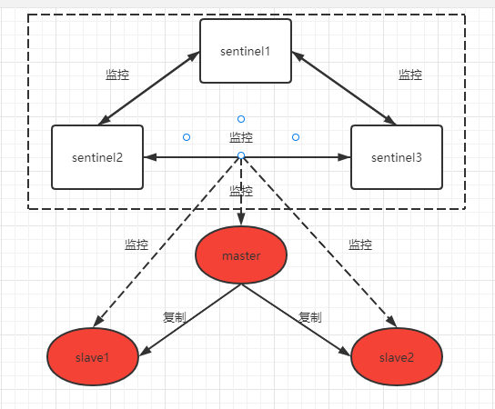

Redis基础
基本数据类型
1. String 字符串
2. LIst 列表
3. Set 集合
4. SortedSet 有序集合
5. Hash 哈希
高级数据类型
1. Stream 消息队列(MQ)
- 生产信息
- 消费消息
2. Geospatial 地理空间
- 经度
- 纬度
3. HyperLogLog
4. Bitmap 位图
5. Bitfield 位域
高级内容
1. 发布订阅
- 发布消息
- 订阅消息
- 消息无法持久化，通过Stream消息队列实现持久化
2. 持久化
- RDB：快照
redis.conf配置文件save命令bgsave命令
- AOF：追加文件
redis.conf配置文件
3. 事务
- 与mysql中的事务概念不同
- 与shell脚本中执行批量命令的概念类似
4. 主从模式
5. 哨兵模式
高可用部署
Redis 集群（一主两从三哨兵）
整体架构

搭建步骤
- 使用3台服务器，分别安装 redis，并进行防火墙设置
| ip | port | role |
|---|---|---|
| 192.168.180.197 | 6379 | master |
| 192.168.180.198 | 6380 | slave |
| 192.168.180.199 | 6381 | slave |
配置主节点（192.168.180.197）：
- 修改主节点 redis.conf 配置文件：
# 主节点配置
bind 192.168.180.197 # 绑定主节点IP地址
port 6379 # 主节点端口号
daemonize yes # 以守护进程模式运行
logfile "/var/log/redis/redis.log" # 日志文件路径
save 900 1
save 300 10
save 60 10000
配置从节点（192.168.180.198、192.168.180.199）：
- 修改从节点 redis.conf 配置文件：
replicaof 192.168.180.197 6379
# 从节点配置
bind 192.168.180.198 (或者192.168.180.199) # 绑定从节点IP地址
port 6380 (或者6381) # 从节点端口号
daemonize yes # 以守护进程模式运行
logfile "/var/log/redis/redis.log" # 日志文件路径
save 900 1
save 300 10
save 60 10000
replicaof 192.168.180.197 6379 # 设置主从关系
配置哨兵节点：
- 在每个哨兵节点（每台服务器）上创建 sentinel.conf 配置文件
- 并添加以下内容：
sentinel monitor mymaster 192.168.180.197 6379 2
# 哨兵节点配置
port 26379 (或26380)(或26381) # 哨兵节点监听端口
daemonize yes # 以守护进程模式运行
logfile "/var/log/redis/sentinel.log" # 日志文件路径
sentinel monitor mymaster 192.168.180.197 6379 2 # 监控主节点，指定当有2台哨兵认为主机挂了，则对主机进行切换
sentinel down-after-milliseconds mymaster 5000 # 故障判定时间
sentinel failover-timeout mymaster 60000 # 故障转移超时时间
sentinel parallel-syncs mymaster 1 # 同步复制的数量
- 在发生主节点故障时，哨兵节点会检测到并触发故障转移。其中一个从节点将被选举为新的主节点，并且哨兵节点会更新配置文件以反映这一变化。因此，即使出现主从节点切换，哨兵节点仍然可以起到监控和自动故障转移的作用。